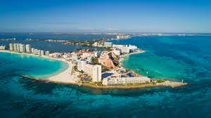
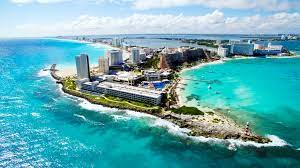
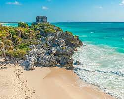
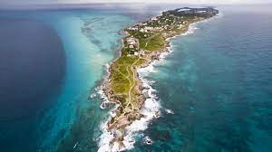
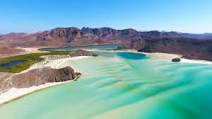
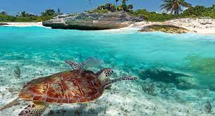
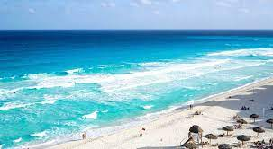
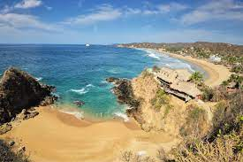
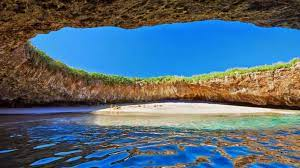
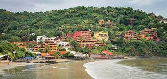

Cancún
Cancún es conocido por sus impresionantes resorts todo incluido, vida nocturna animada y playas de arena blanca.
Playa del Carmen
Playa del Carmen es una encantadora ciudad costera con hermosas playas, tiendas y restaurantes.
Tulum
Tulum es famoso por sus playas de arena blanca, aguas cristalinas y las ruinas mayas en los acantilados junto al mar.
Playa Norte, Isla Mujeres, Quintana Roo
Esta playa en la pintoresca Isla Mujeres es conocida por su suave arena blanca y aguas poco profundas, ideales para nadar y relajarse.
Playa Balandra, Baja California Sur
Situada cerca de La Paz, esta playa es famosa por sus aguas turquesas poco profundas y su espectacular formación rocosa conocida como El Hongo.
Playa de Akumal, Quintana Roo
Conocida como "Bahía de Tortugas", Akumal es famosa por ser un lugar donde se puede nadar con tortugas marinas en su hábitat natural.
Playa Delfines, Cancún, Quintana Roo
Esta playa en Cancún es famosa por sus impresionantes vistas del mar Caribe y sus emocionantes olas, lo que la convierte en un lugar popular para practicar surf y bodyboard.
Playa La Ropa, Zihuatanejo, Guerrero

Ubicada en la pintoresca bahía de Zihuatanejo, esta playa es conocida por su suave arena dorada y aguas tranquilas, ideales para nadar y practicar deportes acuáticos.
Playa Zipolite, Oaxaca
Esta playa en la costa pacífica de Oaxaca es famosa por ser una de las pocas playas nudistas en México. También es conocida por sus olas ideales para practicar surf.
Playa del Amor, Marietas, Nayarit
Conocida como "Playa Escondida", esta playa se encuentra en una isla en el Parque Nacional Islas Marietas y solo es accesible en kayak o en bote. Es famosa por su impresionante formación rocosa en forma de arco.
Playa Paraíso, Tulum, Quintana Roo
Ubicada junto a las ruinas mayas de Tulum, esta playa es conocida por su suave arena blanca y aguas cristalinas, así como por sus impresionantes vistas al mar Caribe.
Playa La Madera, Zihuatanejo, Guerrero
Otra hermosa playa en la bahía de Zihuatanejo, La Madera es conocida por su ambiente relajado y sus aguas tranquilas, perfectas para nadar y practicar snorkel.